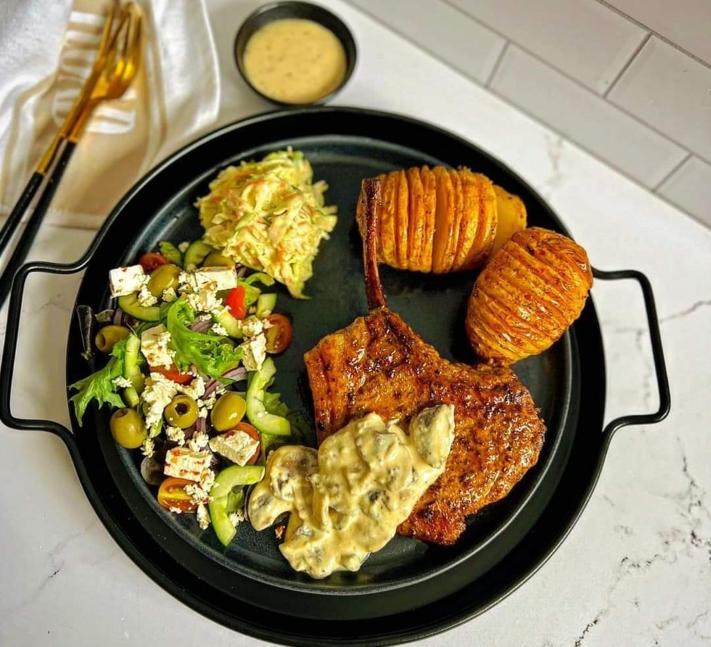

Luxe Life Catering & Decor Company is a black-owned business located in Cape Town,Western Cape, It is under hospitality Indusry and it was established and lauched
The co-owners of Luxu catering & Decor are Mr Samkeliso Makhedama, Ms Nomtha Rorwana, Ms Sisipho Sopeza, Ms Lissa Tshona,and Nangamso Xazi,the co-business founders.
All of the five co-founders have succeeded in operating the business with professionalism, delivering nothing but outstanding outcomes and good customer service.
The word Luxe life comes from the word luxury and we believe that in life, we all derseve luxury living in everything we do, we need to live a soft life with luxury.
Serving luxury food with excellent taste and at the customer's comfort describe luxury in life.
When we settled on the business idea, all five of the co-owners have passion for preparing food and ensuring that clients get the service and adore our meals.Making sure that we deliver excellent customer care. While we serve with showing responsibility and professionalism. Maintaning our different dishes to satisfy the customers needs is one of Luxe life catering & Decor's mission. We provide a wide range of services, including leasing to clients who would like to use our equipment.
The main emphasis is on catering goddess-approved dishes made and baked by our skilled chefs, as well as providing decoration,
we have a decoration staff members that are completely trained and equipped to decorate the venues for events.
For the past two years in a row, the organisation has been flourishing, and its development is increasing every day.
People trust our team, and we consistently offer the highest quality work.
Building exceptional customer service was our main objective, and it paid off because the business is currently running smoothly and effectively.

luxury served meal
INSPIRED AND IMPOWRED
Our Values and Beliefs
Healthy Food
Luxe Life Catering & Decor's dedication to providing clean and healthy food reflects their commitment to excellence and customer satisfaction. By prioritising food safety, quality ingredients, and nutritional considerations, they contribute to the well-being and enjoyment of their clients' dining experiences.
Quality Ingredients
Using high-quality and fresh ingredients is fundamental to producing clean and healthy meals. Luxe Life Catering & Decor's dedication to sourcing the best ingredients reflects their commitment to providing nutritious and delicious food to their clients. Hygiene Practices: Regular cleaning and sanitization of equipment, utensils, and surfaces are essential to prevent cross-contamination and maintain cleanliness in the kitchen. Proper handwashing and personal hygiene practices among kitchen staff further contribute to food safety.
Food Safety Standards
adhering to strict food safety standards is crucial to prevent foodborne illnesses and ensure the well-being of customers. This includes maintaining a clean and sanitised kitchen environment, proper storage of ingredients, and following hygienic practices during food preparation.
Customer Trust and Satisfaction
By prioritising clean and healthy food, Luxe Life Catering & Decor builds trust and confidence among their customers. Knowing that their meals are prepared with care and attention to hygiene standards enhances the overall dining experience and customer satisfaction.
Continuous Improvement
Regular training and education on food safety practices and nutritional guidelines enable the team at Luxe Life Catering & Decor to stay updated and continuously improve their services. This commitment to ongoing learning and improvement ensures that they remain at the forefront of delivering clean and healthy meals.
WHAT WE DO
Luxe Life Catering and Décor Company takes great pride in delivering exceptional service and providing delicious meals for their customers to enjoy with their loved ones. The company places a strong emphasis on customer satisfaction, aiming to exceed their expectations with the quality of their service and the deliciousness of their meals
Main services
Baby Showers Decor & cater
Birthday parties
Matric dances party
Anniversaries
Funeral services
Year End fuctions cater & Decor
For more information, please visit our services page.